The hidden volume stops being a rendering primitive
Implementation study · v1
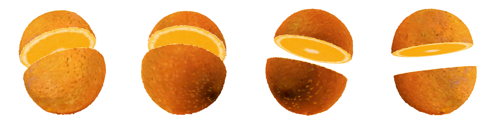
A 3D Gaussian reconstruction has no interior. FruitNinja1 gives it one by filling the enclosed volume with small opaque Gaussians and supervising them against diffusion-generated cross-sections. That works, and it binds two different requirements to one parameter. Write \(\rho = \sigma/h\) for the Gaussian support scale over the sample spacing:
Small support leaves gaps that only a very high primitive count or the rasteriser's screen-space footprint can hide. Large enough support to cover the spacing means neighbouring primitives overlap, and alpha compositing then blends across the boundaries — seed against flesh, peel against pith — that the interior exists to show.
The volume does not need a rendering primitive. It needs occupancy, connectivity, an appearance feature and a collision lookup. A cube supplies all four and has no \(\sigma\), no opacity, no rotation and no overlap to tune. A surface, once a cut has exposed one, is better served by an explicit polygonal boundary than by alpha-blended ellipsoids.
The interior grid is built by reusing the existing inside/outside detection and changing only its last step: an occupied cell stores a cube and a feature instead of initialising a Gaussian. That step turned out to hide a sampling problem worth reporting.
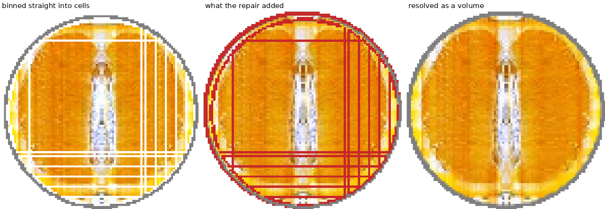
The check that matters is not a picture but a property: a solid occupancy is a fixed point of the closing operation, with nothing left for it to seal. After the repair that count is zero, which settles every future cut plane and every output resolution at once.
For a plane \(\Pi(x)=n^\top x + d = 0\), each pixel has a position \(x(u)\) on it. Find the containing cell and emit its decoded colour:
That is the whole renderer: piecewise constant, no interpolation. Interpolation would reintroduce smoothing across exactly the material boundaries the cube representation was adopted to keep. Coverage is a containment test on a cube rather than the union of a set of splats, so the section is hole-free by construction — measured at 0.0 background-gap ratio at both 512 and 2048 output resolution.
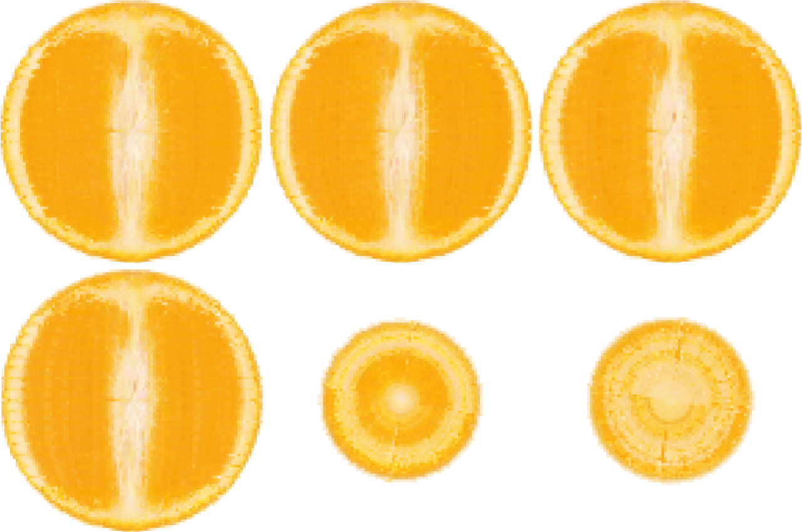
| Iteration | Loss | Residual | Held-out PSNR | Held-out SSIM |
|---|---|---|---|---|
| 0 | 0.217 | 0.0214 | 16.70 | 0.758 |
| 20 | 0.096 | 0.0041 | 20.48 | 0.836 |
| 40 | 0.090 | 0.0035 | 21.26 | 0.849 |
| 59 | 0.085 | 0.0030 | 21.60 | 0.856 |
Held-out planes have their references drawn once and frozen, so the score is measured against a target that does not follow the model. 60 iterations over 8 longitudinal and 16 transverse planes at 512², eight minutes on one RTX 3090.
The argument above is about a representation, so it has to be measured against the alternatives rather than asserted. Every row below gets the same occupied volume, the same latent width, the same shared decoder, the same references on the same planes, the same optimiser and 40 iterations, and is scored on the same eight held-out planes. Only the primitive and the way a cross-section is drawn from it differ.
| interior representation | primitives | ρ | MB | PSNR | SSIM | LPIPS | gap@4096 | blend px | FPS |
|---|---|---|---|---|---|---|---|---|---|
| Opaque-Atom GS (dense small) | 3,720,640 | 0.35 | 269.7 | 19.09 | 0.738 | 0.360 | 0.0000 | 5.73 | 57.4 |
| Coarse large-support GS | 465,080 | 1.00 | 33.7 | 17.04 | 0.758 | 0.387 | 0.0000 | 15.59 | 250.8 |
| Voxel-Lattice GS | 465,080 | 0.50 | 33.7 | 18.36 | 0.746 | 0.358 | 0.0000 | 9.73 | 285.6 |
| Cube + O-Voxel (ours-v1) | 465,080 | — | 32.2 | 19.21 | 0.770 | 0.402 | 0.0000 | 3.93 | 701.1 |
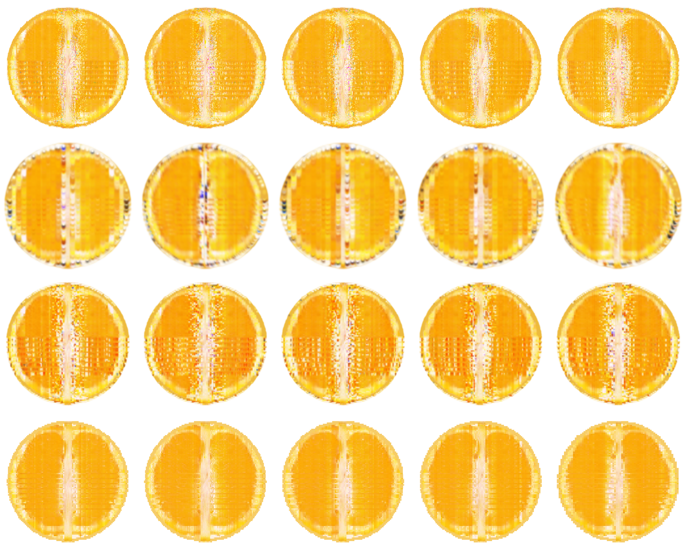
The cube row has the sharpest material boundaries by a factor of 1.5 over the next best, renders 12× faster than the dense row, uses 8.4× less memory, and reaches the best PSNR and SSIM against a representation with eight times the primitives.
It loses LPIPS, to all three. Half of that gap is the unsupersampled rendering used for parity with the rasteriser; the rest is the representation, and the mechanism is not the obvious one. It is not blockiness — side by side the cube row is the smoothest of the four, and it has the sharpest boundaries by the blend measure. What it lacks is the incidental grain that overlapping primitives generate everywhere. LPIPS compares texture statistics against a photograph, which is full of grain, so a volume that is constant inside each cell is penalised for exactly the smoothness the other three metrics reward.
Both halves of eq. (1) are geometric, so neither needs training. Sweeping the support scale at fixed spacing:
| ρ | gap@1024 | gap@4096 | blend px |
|---|---|---|---|
| 0.20 | 0.0048 | 0.0117 | 4.41 |
| 0.35 | 0.0000 | 0.0000 | 6.14 |
| 0.50 | 0.0000 | 0.0000 | 7.70 |
| 0.75 | 0.0000 | 0.0000 | 9.58 |
| 1.00 | 0.0000 | 0.0000 | 11.00 |
| 1.50 | 0.0000 | 0.0000 | 13.00 |
| cube | 0.0000 | 0.0000 | 2.11 |
Holes below ρ ≈ 0.35, blending rising linearly above it, and no setting that avoids both. The cube has neither and sits below the whole curve, because it has no ρ to tune — which is the claim, now with a measurement under it.
One nuance the sweep exposes, and which section 2 predicts: the holes vanish at quite a small ρ because the rasteriser's screen-space footprint hides them. The cost of a small σ is therefore paid not in gaps but in density — the dense row needs eight times the primitives, 8.4× the memory and 12× the render time to reach a fidelity the cube row matches.
A cut refines only the cells the plane passes through — a fixed 2×2×2 block per cut cell rather than a general octree — classifies every leaf by the sign of \(\Pi\) at its centre, keeps adjacency only between leaves on the same side, and takes connected components. The piece boundary is therefore voxel-approximate, and its accuracy is the leaf size.
The drawn face is not. Intersecting the plane with each leaf's twelve edges gives a convex polygon lying exactly on \(\Pi\), so the visible cut is flat to machine precision (\(\max|\Pi(v)| \le 7\times10^{-8}\)) while collision and connectivity keep the simplicity of a grid. Each polygon is emitted twice with opposite winding, once per piece.
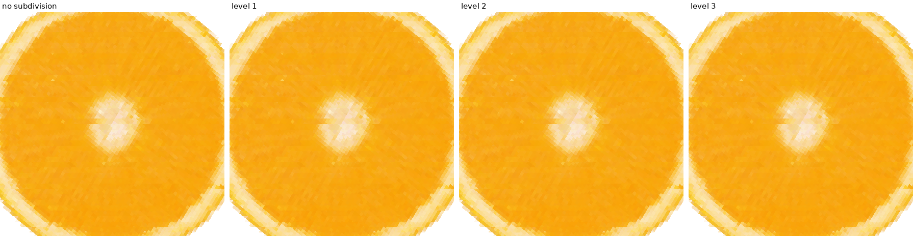
The exterior keeps its Gaussian renderer and the cut surface gets a mesh one. Both emit colour and depth, and the frame is the nearer of the two at every pixel.
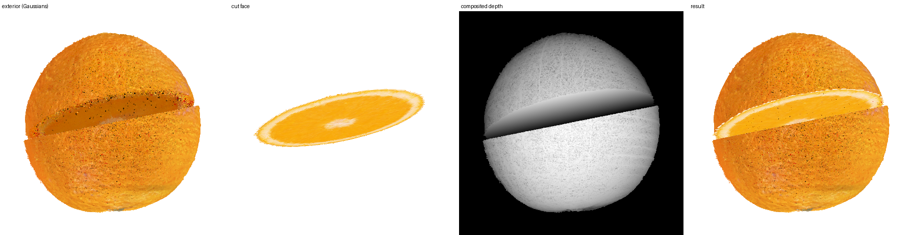
The newly exposed surface is converted to an O-Voxel Flexible Dual Grid — a field-free sparse voxel surface, which is what lets a single open cross-section patch be represented without first being closed into a watertight volume. Only the new patch is converted; the object is not re-voxelised per cut.
Compared against TRELLIS.2's own mesh_to_flexible_dual_grid on the same patch,
the two agree about topology almost exactly — 8,409 dual quads against 8,410, from the same
active voxels — and disagree about where the dual vertex goes.
| Encoder | Dual quads | Dual vertices off-plane | Patch area |
|---|---|---|---|
| Built-in (mean of edge crossings) | 8,410 | 9×10−8 | 0.778 |
| TRELLIS.2 (QEF) | 8,409 | 0.58 voxel | 0.928 |
| reference | — | 0 | 0.782 |
The official encoder solves the QEF unconstrained and falls back to axis-constrained solves when the answer leaves the voxel. For a perfectly planar patch every face constraint is the same plane equation, so that first system is rank-deficient, the solution is free in two directions, it leaves the voxel, and the fallback clamps it onto a voxel face — off the plane. Inert across four orders of magnitude of the regularisation weight. Taking the mean of the crossings on each voxel's edges is exact for a planar patch instead, because every crossing lies on the plane. This is not a defect in TRELLIS.2 — its O-Voxel targets closed curved surfaces, where the QEF is well-posed and strictly better; the analytic cut face just happens to be the one degenerate case.
One plane first, and then several — which is the order the specification recommends, because what several cost is data management rather than a new idea. The cut band becomes the union of the planes, so a cell where two cuts cross is allocated once and its leaves are classified against both. A leaf's side becomes a bitmask, one bit per plane, so "same side" stays a single integer comparison however many planes there are. And each plane's polygons are clipped by the others' half-spaces.
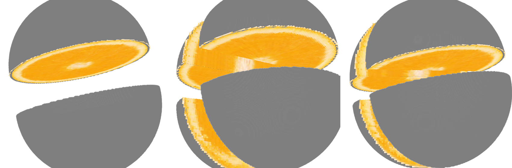
| planes | pieces | first plane's face area | max |Π(v)| |
|---|---|---|---|
| 1 | 2 | 1.58554 | 2.0×10−8 |
| 2 | 4 | 1.58554 | 2.0×10−8 |
| 3 | 8 | 1.58554 | 2.0×10−8 |
The area column is the check worth making. Adding a cut does not remove any of the first plane's surface — it only redistributes it among more pieces — so a total that shrinks means polygons were clipped away instead of split, and one that grows means they were duplicated. It stays fixed to six figures, and the faces stay flat to machine precision.
The O-Voxel patch is a visible boundary and takes no part in volume physics; the cube hierarchy remains the physical volume. Collision stays integer indexing into a dense map with a descent into refined blocks, never a point-to-polyhedron query. A cut relabels the existing MPM particles rather than creating new ones, so local subdivision does not inflate the simulation.
After a cut the pieces have to move and collide independently, and that is a question the rest frame cannot even ask — there the pieces are disjoint sets of leaves and cannot overlap. Giving each piece a rigid pose turns it into one: map a world point back through that piece's pose, then run the same integer-indexed lookup.
| one half driven into the other | overlap / claimed |
|---|---|
| 0.00 (rest) | 0.00% |
| 0.05 | 8.01% |
| 0.15 | 27.19% |
| 0.30 | 55.48% |
| 0.60 | 26.07% |
Zero at rest, monotone as one half is pushed into the other, and falling again past 0.60 — which is larger than the radius, so the halves have passed through each other and their intersection is shrinking. Pushed apart instead, it stays zero at every distance. Rigid on purpose: the particle set stays the deformable state and the cube hierarchy stays the collision volume, which is the division of labour eq. (28) sets out.
On 100,000 particles: occupancy hit rate 100%, and 100% agreement between a particle's assigned piece and which side of the analytic plane it lies on. That second number needs the narrow-phase test — the piece boundary is voxel-approximate while the drawn face is analytic, and up to half a leaf of material sits between them. Cut-surface vertices are bound to nearby particles with fixed weights; a rigid translation of the particles moves the surface with a maximum drift of 1.3×10−7.
Permanent interior storage is 32.2 MB for 465,080 cells — 72.6 bytes per cell, holding occupancy, an 8-dimensional latent, a piece id and a refinement handle. The cut band costs a further 20.4 MB while it exists.
An O-Voxel surface can hold PBR attributes, not only colour, and the decoder's second output \(a\) is where they come from. Two channels are trained, under their own names, from the same feature the colour head reads.
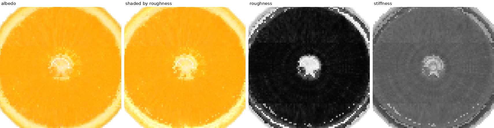
Both channels travel the whole path — cut mesh, to the patch's surface attributes, to the renderer, which shades the face with a lobe whose width the decoded roughness sets. That last step matters more than it looks: an attribute nothing renders is an attribute nothing can be wrong about. Roughness spans 0.013 to 0.982 across a patch, and shading moves 11% of the covered pixels by up to 0.074.
Derived from saturation and not from the two facts the stiffness target uses — two channels regressed onto the same target would be one channel reported twice.
The decoder's second output, \(D_\theta(f) \to (c, a)\), is trained too. \(a\) is a relative stiffness in [0, 1] — how stiff this cell is compared with the rest of the same object — read from the same feature the colour head reads. That sharing is the point rather than an economy: material and appearance are not independent, peel is the colour of peel, so predicting one from the feature that produces the other is a constraint on the feature for the price of a few thousand parameters.
| held-out PSNR | held-out SSIM | mean |a − target| | |
|---|---|---|---|
| appearance only | 21.60 | 0.856 | — |
| + material head | 21.49 | 0.856 | 0.0122 |
The head fits the ordering to 0.012 on a target spanning 0.365 to 1.00 — under 2% of its range — for 0.11 dB of appearance, which is inside the run-to-run spread.
Section 1.2 of the specification is a list of deliberate omissions, and section 12.2 turns three of them into limitations the paper is told to admit. Every one is now implemented, measured, and off by default — the fixed block, the inherited feature and the single renderer are still what runs unless asked otherwise, so every number earlier on this page still stands. What follows is what each omission was costing.
A leaf the plane passes through is handed whole to whichever side its centre fell on, and the material on the other side is the error. Subdivision shrinks it by making the leaves smaller; clipping removes it by computing the volume that is actually there. Each cut leaf is intersected with the planes' half-spaces, the resulting convex polyhedron is decomposed into tetrahedra, and every side code with a non-zero volume becomes a fragment of its own piece — emit only the leaf's own side and the total under-counts, which is the voxel approximation in a different hat.
| subdivision | leaves | voxel-approximate error | exact-fragment error |
|---|---|---|---|
| none | 0 | 0.00997 | 0.00251 |
| level 1 | 14,328 | 0.00997 | 0.00251 |
| level 2 | 114,624 | 0.00969 | 0.00251 |
| level 3 | 916,992 | 0.00242 | 0.00251 |
Relative piece-volume error against the closed form for a sphere cut at 0.37 of a cell from centre. Clipping at no subdivision matches what the voxel approximation needs 917k leaves to reach, and the exact column does not move with level because it does not depend on how the cut was voxelised. The 0.00251 that remains is the sphere's own occupancy discretisation — the floor for both columns, and not something a cut-cell method can remove.
A fixed 2L block spends the deepest level any cut cell needed on every cut cell.
What varies across a band is how badly a leaf is misclassified, and that has a closed
form: \(e = h^3 - \max_c \mathrm{vol}_c\), the leaf's volume minus the largest exactly-clipped
side. Refine a cell only while its leaves still get more than a tolerance of a coarse cell's
volume wrong, and level becomes a ceiling rather than a depth.
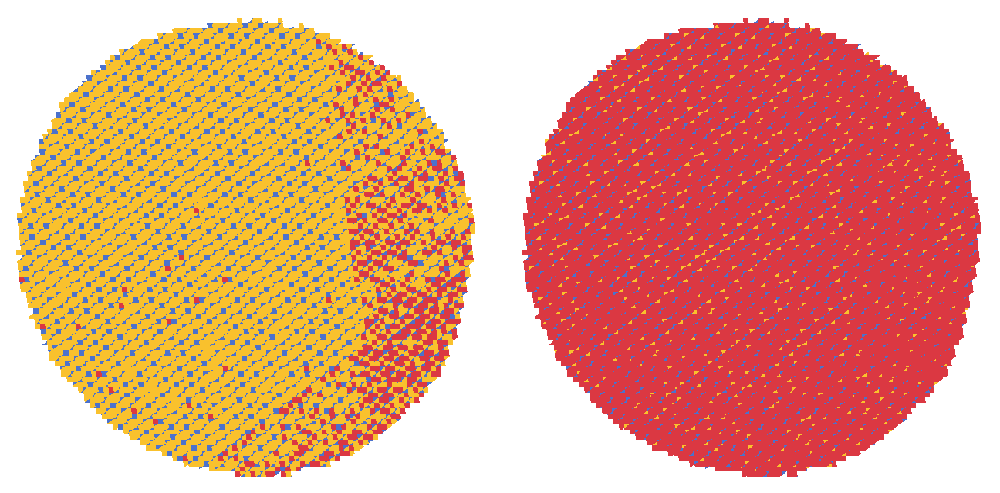
| object and cut | uniform level 3 | adaptive, same accuracy | leaves saved |
|---|---|---|---|
| dumbbell, through one ball | 487,424 leaves | 7,616 leaves | 98.4% |
| ball, oblique (1,2,3) | 1,252,352 · err 0.00040 | 912,992 · err 0.00037 | 27.1% |
| orange, oblique | 5,440,512 · err 0.000266 | 3,229,632 · err 0.000266 | 40.6% |
Piece counts are identical to uniform in every case, which is the part that could have failed silently: mixed depth makes one child's face meet 4d children of a coarser block, and a wrong adjacency there splits a piece or fuses two with no error raised. Rather than enumerate that fifth case by hand, every leaf emits the cells of its two faces on one common finest grid as integer keys and adjacency is a sort — all five cases, including coarse-to-coarse, collapse into one join.
Equation 19 copies \(f_{\text{parent}}\) into every child. The band is then piecewise constant per parent, so all of its variation sits on the coarse-cell boundaries — a staircase put in at exactly the place resolution was raised to remove one. Trilinear interpolation over the parent's six-neighbourhood, with missing neighbours dropped and the weights renormalised so a child near the boundary falls back toward its parent, costs one gather per corner and removes it.
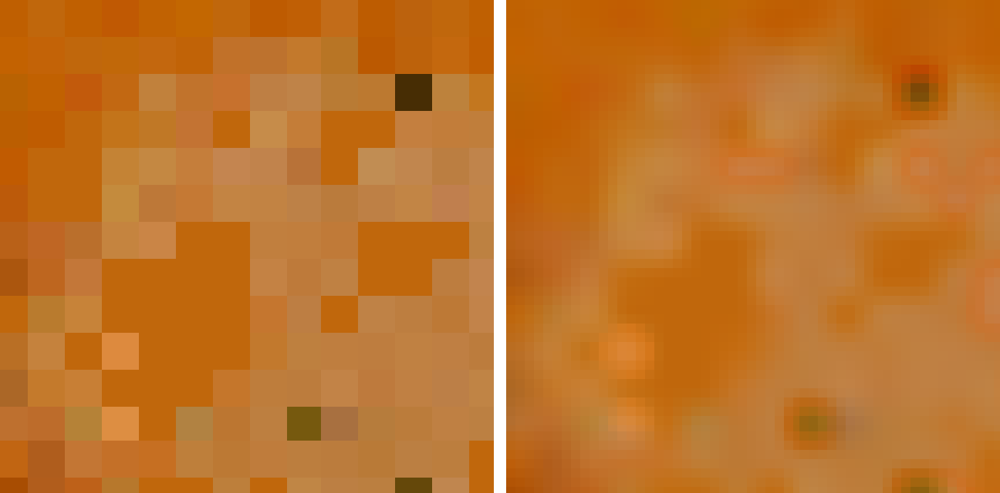
| child features | |Δf| between siblings | |Δf| across a parent boundary | staircase ratio |
|---|---|---|---|
| inherited (eq. 19) | 0.000000 | 0.045836 | ∞ |
| parent + neighbour | 0.007074 | 0.008381 | 1.18 |
Measured on the orange at level 2. Inheritance puts every bit of variation on the parent boundaries; interpolation spreads it evenly, at a ratio of 1.18 rather than infinity. It adds no information — specification 12.2 is right that neither version invents interior texture, and that is what the last of these six items is for.
Three problems live in specification 12.2's one sentence about blocks accumulating.
Cache: every cut rebuilds the whole band, so a second plane redoes the first's work.
Merge: nothing ever gives depth back, so an undone cut leaves its blocks behind.
Hierarchy: nothing bounds the total. CutBand does all three on the ragged
adaptive layout, where adding blocks is a concatenation and dropping them a gather.
The cache is exact — adding planes one at a time lands on the same blocks, leaves and piece counts as one call over all of them — and it is also, measured, not worth much:
| five concentrated cuts on the orange, from scratch | |
|---|---|
| building the refined band | 0.003 s |
| labelling the pieces | 0.419 s |
Band construction is 0.7% of a cut. Caching it cannot matter, because connected components over 4.4 million leaves has to be redone whenever the plane set changes at all. The accumulation specification 12.2 warns about is a memory problem, and merge and budget are what address it.
| state | blocks | leaves | band memory | pieces | total volume |
|---|---|---|---|---|---|
| after five cuts | 36,430 | 2,331,520 | 91.30 MB | 25 | 1.437070 |
| three of them removed | 13,716 | 877,824 | 34.38 MB | 4 | — |
| the same two, from scratch | 13,716 | 877,824 | — | 4 | — |
| budget 1,500,000 | 36,430 | 1,499,976 | 58.79 MB | 24 | 1.437070 |
| budget 700,000 | 36,430 | 699,960 | 27.51 MB | 25 | 1.437070 |
| budget 200,000 | 25,000 | 200,000 | 7.92 MB | 23 | 1.437070 |
Removal is exact to the block: the band left behind is byte-for-byte the one a fresh cut with the surviving planes builds. The budget coarsens cheapest-first by the same misclassified volume the refinement criterion spends on, so eviction and refinement agree rather than fight; the total volume is invariant because coarser leaves still tile the same object, and the piece count is what degrades — which is the trade being bought, stated rather than hidden.
Keeping the photographed outside as Gaussians and only the cut face as O-Voxel is what makes specification 12.2's third limitation necessary: two renderers, a depth convention to agree on, and a compositing step. Converting the exterior removes the seam instead of managing it. The occupancy grid already holds the volume, so the exterior is its boundary — every face of an occupied cell with an empty neighbour — and the same dual-grid encoder that handles the cut face takes the staircase off it.
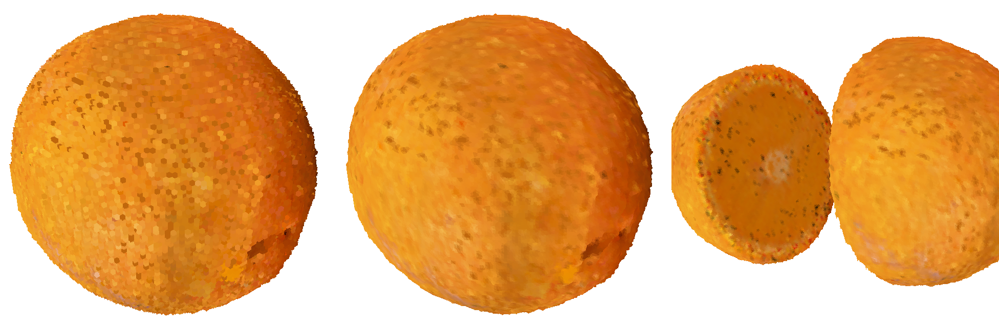
| surface | area ÷ 4πR² | dual-vertex radius |
|---|---|---|
| voxel boundary | 1.485 | — |
| O-Voxel dual grid | 1.023 | 0.4994 ± 0.0029 (true 0.5) |
An axis-aligned voxelisation of a sphere has exactly 3/2 the sphere's surface area, and the measurement lands on it. Dual contouring removes 95% of that excess. Against the equation 27 path the unified render agrees to 25.1 dB at 119 FPS, and its silhouette is slightly smaller — 0.3981 of the frame against 0.4058 — because dual contouring pulls the surface off the voxel corners, which is the same shrink the area column measures rather than a disagreement about where the object is.
This is the one that answers 12.2's first limitation, and the only one that adds information rather than arranging it better. A planar face seen down its own normal has no occlusion and no foreshortening, so one image is the whole face; enhance that image; then — the step that makes it super-resolution rather than a filter — write it back into the refined child features by fitting them through equation 7's shared decoder. The detail becomes a property of the leaves, not of the frame.
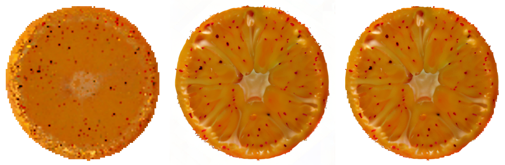
Consistency is the claim that can be checked. The face is planar, so two views of it are related by an exact homography and one can be warped onto the other with no depth and no occlusion to argue about:
| cut face detail comes from | cross-view agreement | detail in the view |
|---|---|---|
| nothing — the trained volume alone | 35.32 dB | 0.0136 |
| the enhancer, run on every frame | 21.15 dB | 0.0240 |
| the enhancer, baked into the leaves | 34.56 dB | 0.0207 |
Painting each frame costs 14.2 dB of agreement between views — the detail swims, because it belongs to the image. Baking costs 0.8 dB while carrying 52% more detail than the bare volume.
The supervision concept is carried over unchanged: photographs of real cross-sections through a warmup, then diffusion regeneration from the model's own render under a convergence gate, with each new target blended back toward the photograph so the closed loop has a fixed point. It runs — 200 iterations in 16 minutes, the gate firing three times. It also makes the result worse, at both restoring-force settings tried.
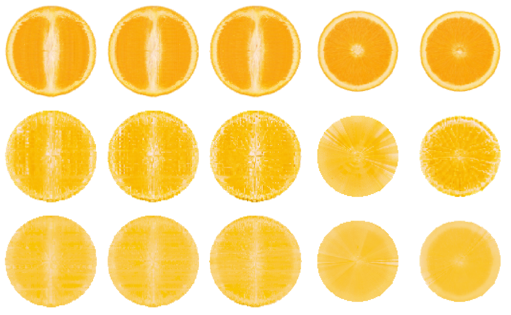
| Configuration | Speckle | Structure | Mean RGB | Held-out PSNR |
|---|---|---|---|---|
| Photographs only, 60 it | 5.72 | 3.56 | (0.974, 0.735, 0.251) | 21.60 |
| + diffusion, anchor 0.30 | 7.83 | 4.47 | (0.974, 0.781, 0.227) | 17.57 |
| + diffusion, anchor 0.75 | 5.19 | 2.40 | (0.972, 0.794, 0.306) | 17.97 |
| the photograph itself | 5.27 | 4.54 | (0.975, 0.730, 0.235) | — |
At 0.30 the loop amplifies structure and noise together and the sections come out crossed by vertical streaks along the extrusion axis. At 0.75 the restoring force removes the speckle and takes the structure with it. There is no setting here that buys structure without buying noise, and both refined runs sit about 4 dB below the photograph-only one.
This is a property of the object and its references rather than of the method: the object is a generated sphere whose only real supervision is two photographs, and closing the loop on a diffusion prior gives it nothing the photographs did not already have. An object with genuinely view-varying interior structure is where the loop is supposed to pay, and that is not tested here.
The specification's own list of limitations is above, six sections of it, each with the thing it was costing measured. What is left is what none of that reached.